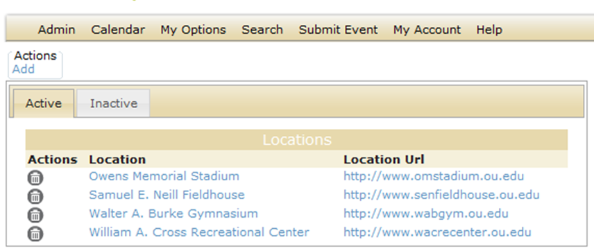
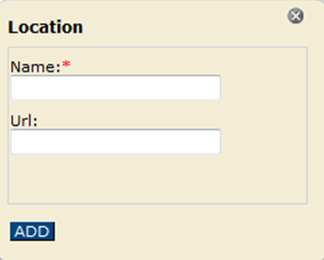
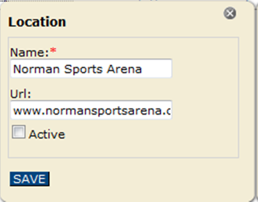

Working With Event Locations
The event location is the location where the event is to take place. For example, if you are managing a calendar for a university’s athletic events, you could set up a list of possible locations for the event, such as the stadium, the field house, the sports arena, the gymnasium, and so on. When you set up a location in Master Calendar, you can also provide a hyperlink for the location. For example, if you are managing a university’s athletic calendar, and you add the football stadium as a location, you can include a URL for a webpage showing a map of the stadium. The Location field for an event can be optional or required, depending upon your Master Calendar parameter settings. This topic guides you in setting up new event locations, activating and de-activating event locations, editing event locations, and deleting event locations.
See Also: Default Page Configuration Settings
Setting Up a New Event Location
1. On the Admin menu, point to Configuration > Locations. The Locations page opens on the Active tab, which lists all currently active event locations in Master Calendar.

2. Under Actions, click Add. The Location dialog box opens, where you name the event location and you can provide a hyperlink. Users will then be able to select this new location from a dropdown list in the Location field on the Submit Events page.

3. In the Location field, enter a name or description for the location.
4. Optionally, in the Location URL field, enter a URL.
5. Click Add. The location is added as an active location in Master Calendar.
Working With Existing Locations
1. On the Admin menu, point to Configuration > Locations. The Locations page opens on the Active tab, which lists all currently active event locations in Master Calendar.
2. To activate/de-activate locations, choose from the Active or Inactive tab.
- Select the event location that you wish to activate or de-activate.
- Under Actions, click Edit.

- Use the Active checkbox to control whether the Location is available to users for selection when booking an event.
- Click Save. Your changes will be applied immediately; activated Locations will appear for selection in the dropdown next to the Location field on the Submit Events page, and de-activated Locations will not.
2. To edit the name, the URL, or both for a Location, click on the name of the location that you wish to change, from either the Active or Inactive tab. The Location dialog box opens.
- Edit the name of the location, the URL, or both as needed.
- Click Save to save the edited event location in Master Calendar.
3. To delete a Location, locate it on the the Active or Inactive tab.
 | Tips:You can delete a Location only if no sub-locations reference the location. If any sub-locations reference the selected location, you must first delete the sub-locations, and then you can delete the location. We recommend reviewing and editing your sub-locations first. See Also: Working With Event Sub-Locations. If you delete an active event location, any current events that use this location are not affected. The deletion simply means that going forward, the location is not available for use. You can delete only one location at a time. |
- Click the Delete icon next to the Location you wish to delete. If any sub-locations reference the selected location, a dialog box launches indicating the number of sub-locations that reference it. You must first delete these sub-locations before you can delete the location. If no sub-locations reference the selected location, a message prompts you to confirm that you want to delete the selected location.
- Click OK. A message opens confirming the deletion.
- Click OK in the message. The list of locations is updated to reflect the deletion of the event location.
Page tags: article:topic